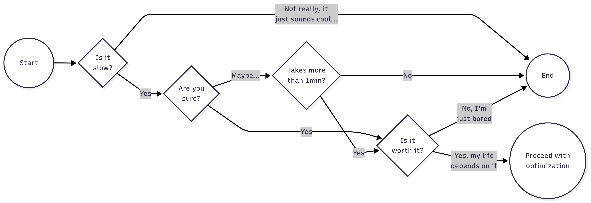
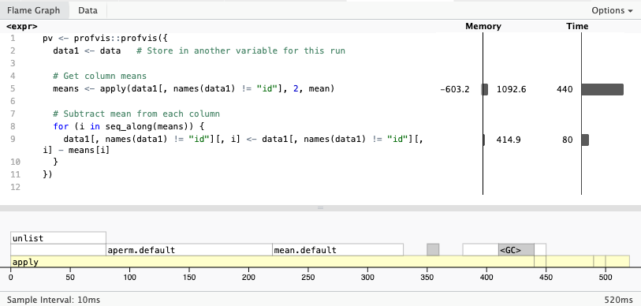
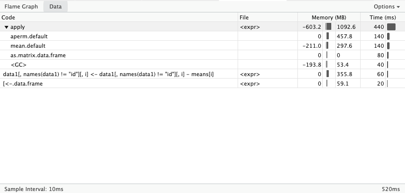

# Generate data
times <- 4e5
cols <- 150
data <- as.data.frame(x = matrix(rnorm(times * cols, mean = 5), ncol = cols))
data <- cbind(id = paste0("g", seq_len(times)), data)
pv <- profvis::profvis({
data1 <- data # Store in another variable for this run
# Get column means
means <- apply(data1[, names(data1) != "id"], 2, mean)
# Subtract mean from each column
for (i in seq_along(means)) {
data1[, names(data1) != "id"][, i] <- data1[, names(data1) != "id"][, i] - means[i]
}
})
htmlwidgets::saveWidget(pv, "profvis-slow-code.html")
# In interactive mode, we can directly view the profiling results
if (interactive())
print(pv)Perfilado de Código
Nota de Traducción
Esta versión del capítulo fue traducida de manera automática utilizando IA. El capítulo aún no ha sido revisado por un humano.
El perfilado de código es una herramienta fundamental para programadores. Con el perfilado, es posible identificar posibles cuellos de botella en tu código, así como uso excesivo de memoria. Algunas cosas importantes a considerar al perfilar tu código:
Tiene un componente estocástico: Independientemente de la complejidad computacional, un programa puede exhibir diferentes características de rendimiento en diferentes ejecuciones. Esto significa que siempre debes perfilar tu código múltiples veces y tomar el rendimiento promedio como resultado final.
Es inútil si el programa es demasiado rápido: La mayoría del tiempo, el perfilado de código debe hacerse en programas que toman una cantidad notable de tiempo para ejecutarse. Si un programa se ejecuta demasiado rápido, la sobrecarga del perfilado mismo puede sesgar los resultados. Si aún necesitas abordar esto, puedes, por ejemplo, hacer múltiples ejecuciones o usar un conjunto de datos más grande para aumentar el tiempo de ejecución del programa.
No lo hagas demasiado temprano: La mayoría del tiempo, los desarrolladores tienden a optimizar (y por tanto perfilar) su código demasiado temprano. No quieres gastar tiempo haciendo perfilado de código en algo que podría cambiar rápidamente. Por lo tanto, es mejor hacerlo en código que funciona en lugar de en piezas del mismo.
En lugar de perfilar el código demasiado temprano, asegúrate de tener un buen plan de diseño e implementación.
Sé estratégico: No todo necesita ser optimizado. Enfócate en las partes del código que son críticas para el rendimiento y la experiencia del usuario. Puedes pensar en términos de cuánto tiempo el programa/usuario gasta en cada parte.
La IA puede darte buenos consejos: En mi experiencia personal, la IA puede ser útil para hacer perfilado de código también. Esto funciona mejor si estás usando una IA agéntica, ya que es más probable obtener buena retroalimentación de ella (probará el código por ti).
Aquí hay un flujo de trabajo propuesto para perfilar y optimizar tu código en general
Un flujo de trabajo propuesto
Aquí hay una fórmula a seguir cuando hagas perfilado/optimización de código:
- Hazte estas preguntas antes de saltar al perfilado:

Si tienes éxito, entonces asegúrate de que el perfilado se haga en un tiempo finito, esto es, usa un subconjunto de los datos para evitar esperas largas. Ejecutar el perfilador agregará tiempo de cómputo adicional, así que trata de mantenerlo corto (p. ej., 1 minuto).
Puede haber muchas cosas que podrían ser optimizadas, enfócate en lo que entregaría el mayor impacto. Podría ser una función que solo se llama una vez pero toma mucho tiempo para ejecutarse, o una función que se llama múltiples veces pero es relativamente rápida.
Antes de hacer cualquier cambio, asegúrate de tener una copia de seguridad de tu código original, así como una copia de los resultados actuales del perfilado. También debes asegurar guardar (si es posible) el resultado del código.
Vuelve a ejecutar el perfilador y compara el rendimiento. Si no se observan cambios, entonces regresa al paso 2. Asegúrate de que la nueva versión del código mantenga la misma funcionalidad que el original (verifica los resultados).
Perfilado de código en R
En el lenguaje de programación R, la herramienta de perfilado más utilizada viene con el paquete profvis. El paquete proporciona un envoltorio de la función Rprof, que es una función incorporada de R para perfilar código. El paquete profvis hace más fácil visualizar los resultados del perfilado en una interfaz web.
Para usar profvis, primero necesitas instalarlo desde CRAN:
install.packages("profvis")Luego, puedes usarlo para perfilar tu código R de esta manera:
library(profvis)
profvis({
# Tu código R aquí
})Esto ejecutará el código y generará una visualización de los resultados del perfilado en una nueva ventana del navegador. También puedes guardar la salida usando el paquete htmlwidgets:
pv <- profvis({
# Tu código R aquí
})
htmlwidgets::saveWidget(pv, "profvis.html")Una vez abierto, verás dos visualizaciones: el gráfico de llama y los datos. El gráfico de llama es una de las visualizaciones más útiles. Mapea directamente el tiempo y la memoria utilizados por cada línea de código

La visualización de datos muestra la distribución del tiempo gastado en cada función. Usando una estructura de árbol, que permite profundizar en la pila de llamadas.

Tip
Cuando desarrolles paquetes de R, es una buena idea emparejar tu llamada profvis::profvis con devtools::load_all() para asegurar que todo el código fuente esté disponible para el perfilador. De lo contrario, el gráfico de llama no mostrará tu código (dirá “no disponible”).
Ejercicio: Identificando el cuello de botella1
¿Puedes identificar dónde está el cuello de botella en el código? ¿Qué harías para acelerarlo?